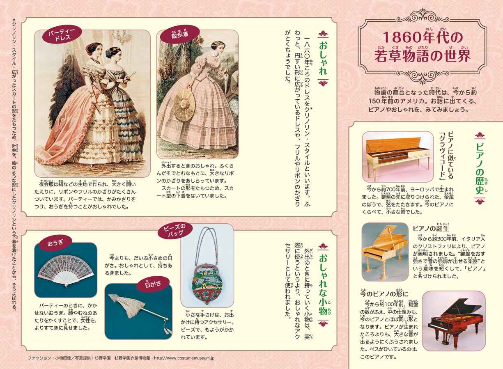
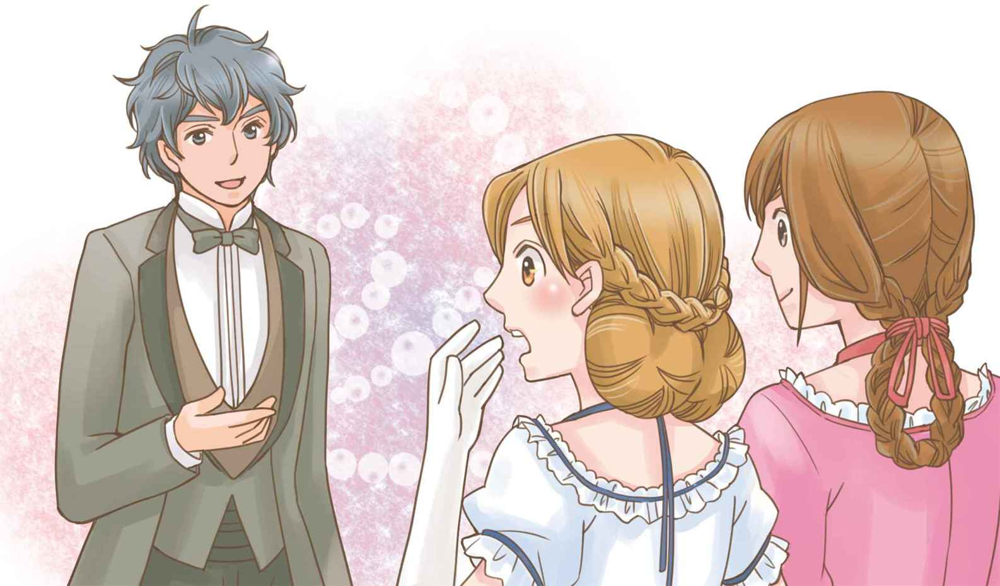
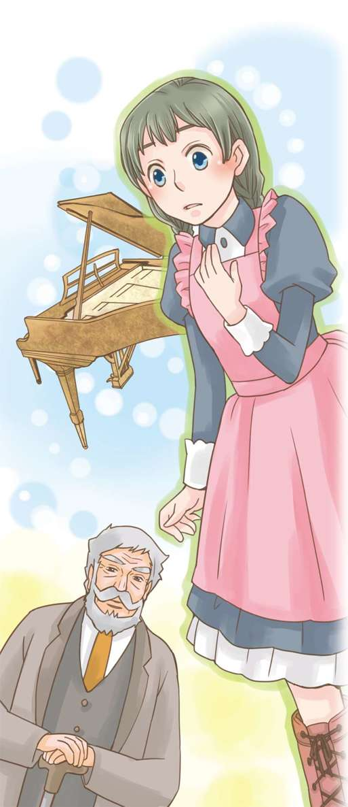
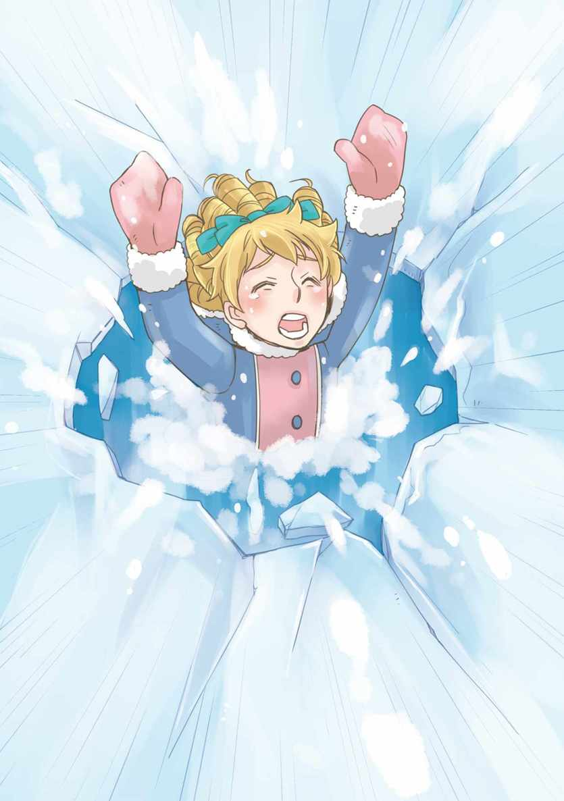
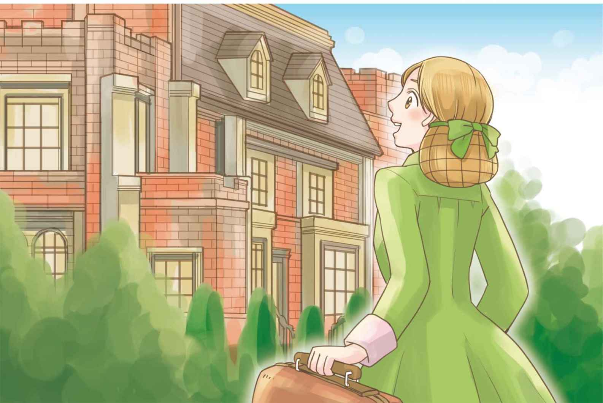
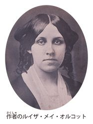

| １０歳までに読みたい世界名作5 若草物語 | |
| Unknown | |
| (2014) | |

１ マーチ家の四人姉妹
「あーあ、クリスマスにプレゼントがもらえないなんて！」
マーチ家の次女、ジョーが、だんろの前にねっころがったまま、ざんねんそうにいいました。
「びんぼうって、つらいわね。」
長女のメグも、そまつな服に目をやって、ため息をついています。
「ほしいものをなんでも買ってもらえる子も、いるのにね。」
ひざにねこをのせた、四女のエイミーも、口をとがらせました。
「でも、わたしたちには家族がいるじゃない。」
三女のベスがいうと、みんなの顔がぱっと明るくなりました。
けれども、ジョーは、またすぐにがっかりしたようにいいました。
「でも、お父さまはいないわ。」
あとの三人も、だまりこんでしまいました。
今、この国は、南と北に分かれて戦争をしています。四人の父親であるマーチ氏は、戦地で牧師（＊）としてはたらいています。少なくとも、あと一年は帰ってきません。そして、もしかしたら一年たっても帰ってこないかもしれないのです。兵隊のように戦うわけではないとはいえ、はげしい戦争のさなかでの、命がけのお仕事です。
マーチ家は、今年のクリスマスを、上からメグ、ジョー、ベス、エイミーという四人の姉妹と、母のマーチ夫人、そして、ずっと昔からいるばあやのハンナだけですごそうとしています。
少し前までは、マーチ家も、ゆたかなくらしをしていました。けれども、お父さまがこまっている友人に手をさしのべたことから、今はまずしい生活になってしまいました。
十六歳のメグと十五歳のジョーは、お金持ちで何も心配がいらなかったころのこともおぼえています。十三歳のベスや、十二歳のエイミーには、ぜいたくな思い出はほとんどないのですが、それでもやはり、一年に一度のクリスマスには、ごちそうやプレゼントがあったらいいなと思っています。
メグは、ため息まじりにいいました。
「自分のおこづかいで、すきなものを買うくらいは、かまわないでしょう。だって、そのために、みんながんばっているんですものね。」
メグとジョーはくらしをささえるために、もうはたらきに出ています。メグは、お金持ちのキング家でぜいたくなくらしを見せつけられながら、小さい子どもたちの世話をしています。ジョーは、口うるさい親せき、マーチおばさまのお屋しきでてつだっています。
ベスとエイミーは、まだ仕事に出てはいませんが、それぞれにつらいことをがまんしています。ベスはひどい引っこみじあんなので、学校に行かず、家で勉強をしているのですが、ほかの時間は、ばあやのハンナといっしょに家の仕事をしています。小さい両手は、あかぎれだらけです。その手で、家の古いピアノをひくことだけがベスのたった一つの楽しみでしたが、そのピアノはもうぼろぼろで、満足に音を出すことさえできません。
すえっ子のエイミーは学校に行っていますが、父親がいないことや、家がびんぼうなことをばかにする意地悪な子たちがいます。
四人の女の子たちは、それぞれ自分が世界でいちばん不幸せな気がして、だまってしまいました。
＊ 牧師...神の教えを話して聞かせ、みちびく人。
そのとき、時計のかねが六時を打ちました。そろそろお母さまが帰ってくる時間です。みんなは急にそわそわし、だんろの前でスリッパをあたためたり、部屋をかたづけたりしはじめました。
「お母さまのスリッパ、こんなにすりきれてる。あたし、新しいのを買ってプレゼントしようかな。」
ジョーがふと思いついてそういうと、それをきいたエイミーとメグが、わたしも、わたしも、といいだしました。そして、みんながけんかになりそうになったとき、ベスがしずかにいいました。
「ねえ、今年のクリスマスは、みんなでそれぞれにお母さまにプレゼントをしない？ 自分のものを買うのではなくて。」
おとなしいベスにそういわれたので、ほかのみんなも、すぐにさんせいしました。そしてメグは手ぶくろ、ジョーはスリッパ、ベスはハンカチ、エイミーは香水を、プレゼントすることに決めました。
そのばん、マーチ夫人が帰ってくると、みんなは温かい食事のならんだテーブルにつき、それぞれのふまんや悲しみは、すっかりわすれてしまったかのようでした。
お母さまは、四人のむすめのことを、いつもかわりなく平等にかわいがってくれます。母のやさしい言葉を聞くと、みな、いつでも一日のつかれがふきとんでしまいます。
しかも、この日、マーチ夫人はにこにこして、
「今日は、お食事のあとで、とっておきのお楽しみがあるのよ。」
と、いいました。それを聞いた子どもたちは、
「わかった！ お手紙ね。お父さまからのお手紙ね。」
と、そろって顔をかがやかせました。
夕食が終わると、一家はあたたかいだんろの前に集まりました。
お母さまのまわりを、四人のむすめがかこみます。
お父さまの手紙は長く、やさしい思いやりにみちていて、戦地ではたらくつらさや苦しさは、ひと言も書いてありませんでした。それだけに、いっそう、そのはたらきがりっぱに、気高く思えます。
手紙の終わりで、お父さまはお母さまにこう書いていました。
「子どもたちはきっとあなたを助けて、りっぱにるすを守ってくれていることでしょう。
この戦争から無事に帰れたら、わたしたちはきっと、じまんの若草のおとめたちをいっそう愛し、ほこらしく思うことでしょう。」
それを聞くと、四人はこらえきれずに、しくしくなきだしました。
「お母さま、わたしたち、きっとりっぱな女性になります。ほんとうに、お父さまとお母さまの『じまんのおとめ』になれるように。でも、どうしたらそうなれるんだろう。それに、すぐになれるものかしら。すてきな女性になりたいけれど......自信がないわ。」
こまって、顔を見合わせてしまった子どもたちに、お母さまは、にっこりしていいました。
「だいじょうぶ。お父さまが『若草の』と書いてくださったように、あなたたちは、まだまだこれから成長していくのですからね。つらいことも苦しいことも、たくさんあるかもしれないけれど、ひとつひとつ、楽しみながら乗りこえていけばいいのよ。」
女の子たちは、みな、うれしそうに母の顔を見上げました。
２ すばらしいクリスマス
クリスマスの朝、ジョーは目がさめるとすぐに、まくらの下に赤い表紙の小さな本があることに気がつきました。
「聖書だわ！ あたしだけの聖書！」
ジョーは、ほかのみんなも起こしました。メグ、ベス、エイミーのまくらの下にも、それぞれちがった色の表紙の聖書がありました。
「自分だけの聖書を持つなんて、なんだかそれだけで少し大人になったみたい。わたし、毎日かならず少しずつ読むことにするわ。」
メグがいうと、三人の妹もすぐにその気になりました。
二階の子ども部屋はしずまりかえり、四人がページをめくる音だけが聞こえていました。おかしもプレゼントこうかんもないけれど、きよらかで美しい朝です。
しばらくそうしてから、みんなは、そろって下におりていきました。けれども、お母さまのすがたはありません。
「けさ早く、どこかの子どもがものごい（＊１）に来たんで、ようすを見に行かれました。ほんとうにおなさけ深い方ですよ。」
ハンナが、やれやれ、というようにいいました。
しばらくして、マーチ夫人がもどってきたころには、みんなはすっかりおなかがすいていました。ハンナが作ってくれたおいしそうなクリスマスの朝ごはんは、もうテーブルの上にならんでいます。みんなは待ちきれない思いで席に着きました。
「メリークリスマス、お母さま！ すてきな聖書をありがとうございました！」
むすめたちがそろってそういうと、母はにっこりして、それぞれの顔を見わたしました。そして、しずかにいいました。
「メリークリスマス、わたしのかわいいむすめたち。待たせてしまってごめんなさい。じつは、この少し先にフンメルさんという一家がいるの。まずしいうえに、お父さまがいなくて、お母さまが病気で、生まれたての赤ちゃんを入れて子どもが六人もいるのよ。ねえ、この朝ごはん、そこのおうちに持っていくのはどうかしら。」
しばらくはだれも何もいいませんでした。けれども、ジョーが思いきって声を上げました。
「もちろんよ。あたしたちが手をつける前でよかったわ。」
そのとたん、メグ、ベス、エイミーも立ちあがり、手早くマフィンやパン、ケーキなどをバスケットにつめはじめました。お母さまは、そのようすをうれしそうに見ていました。最後はハンナもてつだいはじめ、けっきょく六人そろって、フンメルさんの家まで行進していくことになりました。
フンメルさんの家に着くと、四人の姉妹もハンナも、そのようすに、始めは言葉も出ませんでした。冬だというのにまどガラスはわれたまま、だんろには火もなく、ぼろぼろの毛布一まいに、おなかをすかせた子どもたちが、よりそいながらくるまっています。
マーチ家の六人が、火をおこし、食べものを広げてみせると、ドイツから苦労してアメリカにやってきたばかりのフンメル家の子どもたちは、むちゅうでごちそうを食べました。
家に帰ってから、マーチ家のみんなはパンと牛乳だけでおそい朝ごはんを食べました。けれども、四人の姉妹は、すがすがしい気持ちでいっぱいでした。そして、マーチ夫人も、むすめたちがおこづかいで、自分たちのほしいものでなく母へのプレゼントを買ってくれたことを知って、なみだが出るほど感げきしました。ほんとうに、クリスマスにふさわしい、すばらしい朝でした。
そのあと、四人の姉妹はおしばいをして遊びました。クリスマスでも、お金をかけずに楽しくすごす方法はいくらでもあります。
ところが夜になり、ハンナによばれて、居間に下りてきたみんなが見たものはなんだったでしょう。テーブルにずらりとならんだごちそう、ごうかな花たば、ケーキに、くだもの、フレンチボンボン（＊２）、それに、ピンクと白のアイスクリームまであるのです！
いくらクリスマスでも、マーチ家にこんなぜいたくができるお金はないはずです。
「きっとサンタクロースだわ。」
ベスとエイミーは、うっとりしたようにいいました。
「いいえ。これは、おとなりのローレンス家から、あなたたちへのプレゼントです。ハンナが、たまたま、けさの出来事をおとなりのおてつだいさんに話したところ、ローレンスさまの耳に入ったそうで、あなたたちの行いをほめてくださったの。じつは、わたしのなくなったお父さまとローレンスさまは、昔、なかのいいお友だちだったのですよ。そんなごえんもあって、けさのごほうびに、このごちそうやお花をくださったのです。」
マーチ夫人が説明すると、みんな大よろこびで食たくに着きました。
そのばんは、みんな、おなかも心もすっかりみちたりていました。こんなにすばらしいクリスマスになるなんて、前の日まではだれも思っていなかったのですから。
けれども、ここにお父さまがいてくださったら、もっと幸せなのに、と思うと、やはり四人のむねは少しだけいたむのでした。
＊１ ものごい...人に物をめぐんでくれるようにたのむこと。また、その人。
＊２ フレンチボンボン...フランスのおかしで、さとうでつつみこんだキャンディーの一種。
３ はじめての舞踏会
「ねえ！ ジョー、聞いて！ わたしたち二人、およばれしたのよ。ガーディナー家の年こしの舞踏会に。ああ、うれしい。わくわくするわ。何を着ていこうかしら。」
大こうふんのメグですが、ジョーはひややかにいいました。
「まようことないじゃないの。ポプリン（＊１）のドレスしかないんだから。」
メグは、ため息をつきました。
「ああ、シルクのドレスがあればねえ。ポプリンじゃ、まるで見ばえがしないわ。みんなすてきなのを着てくるでしょうに。」
「だいじょうぶよ。あのポプリンはシルクみたいに見えるから。あ、でも、あたしのは、後ろにやけこげがあるんだった。うっかり、だんろの前に立って、こがしちゃったんだよね。」
ジョーが、顔をしかめました。
「じゃあ、ずっとかべにせなかをくっつけてなさいよ。そしたら、おぎょうぎ悪くする心配もないし。ちゃんとレディらしくしてね。」
「まあ、がんばるわ。じゃあ、あたしが何かしでかしそうになったら、姉さんウインクして知らせてくれる？」
「そんなことできないわ。ウインクなんておぎょうぎ悪いもの。そうだ、『だめ』っていいたいときは、まゆを上げるわね。」
おおみそかの当日、マーチ家の姉妹は大さわぎでした。
ジョーの手ぶくろは両方ともよごれているし、メグのパーティー用のくつは小さくなっているし、こまったことばかりです。ぎりぎりまで、すったもんだしたあげく、メグのきれいな手ぶくろを二人でかたほうずつ持つことにし、メグの足を、なんとかくつの中におしこみ、二人はようやく出かけていきました。
「あまりおそくならないようにね。ハンカチは持ちましたか。」
お母さまは、二人のはじめての舞踏会行きを、心配そうに見送りました。
「お母さまって、かならずハンカチのことをいうわよね。きっと、世界の終わりの日が来たとしても、同じことをきくわね。」
二人の少女は、くすくすわらいながら歩いていきました。けれども、心の中では、まずしいくらしの中でも貴婦人（＊２）のような「たしなみ（＊３）」をわすれない母のことを、とてもほこらしく思うのでした。
ガーディナー家に着くと、メグはいち早くダンスの輪に入っていきました。けれども、ドレスの後ろにやけこげがあるジョーは、そうはいきません。かべにせなかをつけて立ったまま、みんなのダンスをながめていました。
そのうち、たいくつしてきたジョーは、男の子たちがスケートの話をしている輪にくわわろうと一歩ふみだしました。けれども、そのとたん、おどっていたメグがこちらを向いて、びっくりするほどまゆをつりあげたので、ジョーはおそれをなして、近くのカーテンの後ろの小部屋にとびこんでしまいました。
ところが、だれもいないと思ったその場所には、思いがけず「先客」がいました。せの高い、黒かみの、いたずらっぽい目をした少年です。おとなりのローレンスさんの、まご息子でした。
「まあ、失礼。わたくし、だれもいないと思ったものですから。」
ジョーは、あわててしまいました。
「かまいませんよ。ぼくはつかれてしまって、すわろうと思っていたんです。よかったら、いっしょに、ここでのんびりしませんか。」
男の子のほうは、落ちついています。
「あ、はあ。あの、もしかしたら、どこかでお目にかかったこと、ございますましね......あれ？」
ジョーが、きんちょうして、したをかみながらいうと、男の子は、とうとう、たまらずにわらいだしました。
「いやだなあ、わかっているくせに。おとなり同士じゃありませんか、マーチ家のおじょうさん。この間、ねこを返しに行ったとき、お会いしたでしょう。」
そういわれて、ジョーも思わずいっしょにわらってしまいました。
「そうですわね、ローレンスさまのおぼっちゃま。クリスマスには、すばらしいごちそうやお花をありがとうございました。」
「あれは、ぼくではなく祖父からです。でも、おじょうさんに、よろこんでいただけてよかったです。」
「『おじょうさん』なんていわないで。わたしのことはジョーってよんでくださらない？ ほんとうはジョゼフィンだけど、女の子っぽい、長ったらしい名前はきらいなの。」
ジョーがそういうと、男の子のひとみが、おもしろそうにかがやきました。
「へえ。女の子って、みんな気どってるんだと思ってたのに、きみはちがうんだね。じゃあ、ぼくのことも『おぼっちゃま』なんていわないで、ローリーってよんでくれますか。ぼくも、ほんとはセオドアっていうんだけど、その名前きらいなんだ。」
ローレンス家の少年がそんなことをいうので、ジョーもかたの力がぬけて、すっかり気楽になりました。
「じゃあ、ここで少しおしゃべりしましょ。じつはこのドレス、後ろに、やけこげがあるの。みんなの輪の中でおどったら、見られちゃうでしょ。だから、かべに、はりついてじっとしているか、ここにかくれているしかないのよ。」
「それなら、ぼくとおどろうよ。あそこの、だれもいないろうかで！」
ローリーは、そういって真珠色の美しい手ぶくろをはめると、さっとその手をさしだしました。ジョーがその手を取ると、二人はたちまち広いろうかにとびだし、くるくるとおどりまわりました。
ひとしきり楽しんだあと、ならんでソファーにこしかけると、ジョーは感心していいました。
「なんてじょうずなリードだったのかしら。ポルカ（＊４）もすごくおもしろかった。いったい、どこでそんなにいろいろおぼえたの？」
「あちこちでね。外国ぐらしが長かったから。」
ジョーは目をかがやかせました。
「まあ！ だから今まで、あたしたち、あまり顔を合わせたことがなかったのね。いいなあ。外国育ちだなんて。パリにも行ったこと、ある？」
ローリーはジョーにせがまれるままに、スイスの学校の話や、パリへの旅行のことなどを、たくさん話してくれました。
そこへ、メグがよろよろとした足どりでやってきました。
「ああ、ジョー、ここにいたの。すいぶんさがしたわ。」
「姉さん、足をどうかした？」
ジョーがきくと、メグは青い顔をして、いすにたおれこみました。
「おどっていて、足をくじいちゃったみたい。いたくて、歩けないくらいよ。どうしたらいいかしら。」
ジョーは急いで、メグのくつをぬがせました。
「こんな、きついくつをはくからよ。」
「だって、よそ行きのはこれしかないんですもの。でも、家までの道を思うと気が遠くなりそう。どうやって帰ったらいいかしら。」
メグはそういって、ぐったりしてしまいました。
ローリーは、すぐに立って、メグとジョーの二人に、コーヒーとアイスクリームを運んできてくれました。それだけでなく、メグにはわかい紳士らしい上品ないい方で、こう申しでました。
「よろしかったら、うちの馬車で送らせてください。同じところに帰るのですから、ごえんりょなく。」

メグとジョーは、よろこんでローレンス家のりっぱな馬車に乗せてもらうことにしました。しかも、ローリーは気をきかせて自分はぎょ者（＊５）といっしょに前の席にすわったので、二人は気がねなくおしゃべりをし、メグはいためた足をのばすこともできたのです。
「ローリーって、ほんとにいい子ね。いくつくらいかしら。」
「来月で十六歳ですって。でもすごく物知りだし、大人の紳士のようだわ。それでいて気さくでやさしくて、しかもおもしろいの。」
「あなたたち、いい友だちになれそうね。」
「姉さんもよ。ローリーが、姉さんのこと、とてもきれいだって、いってくれたから、あたし、うれしかったわ。
ねえ、はじめてのおよばれ、なかなかよかったと思わない？
手ぶくろはかたほうずつだし、ドレスはやけこげてるし、足もくじいたけど、それでも今日一日、あたしたち以上に舞踏会を楽しんだ貴婦人なんて、いないと思うわ！」
＊１ ポプリン...絹糸と毛、または木綿の糸でおられた布地。女性の服や、ワイシャツによく使われる。
＊２ 貴婦人...身分の高い家に生まれた女の人。上品な女の人。
＊３ たしなみ...ここでは、れいぎなどをよく知っていること。
＊４ ポルカ...きびきびした、軽やかなリズムでおどるダンス。
＊５ ぎょ者...馬をあやつり、馬車を走らせる人。
４ おとなり同士
大雪がふり、マーチ家も、おとなりのローレンスさんのお屋しきも、すっかり銀世界につつまれました。
父のいないマーチ家で、力仕事を進んで引きうけているジョーは、一人で雪かきをしようと、シャベルをかついで出ていきました。
庭では、ベスとエイミーが元気に雪合戦をしています。マーチ家は小さくてまずしいけれど、こんなどんよりした冬の日も、にぎやかで明るく、はなやいでいます。
それにくらべて、おとなりのローレンス家は、りっぱでどうどうとしていて、花のさきみだれる大きな温室まであるのに、ひっそりとして、どこかさびしそうです。
ジョーが雪かきの手をとめて、お屋しきの建物を見上げても、人の気配はありません。けれども、よく見ると、まどの一つから黒い頭のようなものが見えます。どうやらマーチ家の庭のほうを見ているようです。ジョーはくすりとわらって、雪玉を一つ作ると、まどに向かって放りなげました。すると、すぐにまどが開いて、ローリーが顔を出しました。
「ひさしぶり！ ずっと見かけなかったけど、どうしてた？」
ジョーが下からさけぶと、ローリーはかすれた声で答えました。
「ひどいかぜをひいてたんだ。ずっと家にこもってたから、もう、たいくつでたいくつで。」

「じゃあ、うちの妹たちと雪合戦でもしたら？」
「おじいさまが外に出してくれないんだよ。もうほとんどよくなっているのに。きみ、こっちに来られない？」
「いいわよ。ちょっと待っててね。」
しばらくしてからお屋しきにやってきたジョーは、両手いっぱいにいろいろなものをかかえています。
「はい、おみまい。うちのお母さまがよろしくって。このブラマンジェ（＊１）のおかしは、メグ姉さんの手作り。かざりの葉っぱは、すえの妹のエイミーのゼラニウムよ。それと、上の妹のベスが子ねこで遊ばせてあげて、っていうから、三びきもつれてきちゃったわ。」
ローリーはよろこんで、ジョーを自分の部屋に通しました。
「いいなあ、家族がたくさんいて。ぼくは父も母も早くになくなって、兄弟もいないから、この家でおじいさまと二人きりなんだ。この部屋から、きみの家族のようすが見えることがあるんだけど、だんろの前に集まって楽しそうにわらったり、おしゃべりしたりしているのが見えると、ほんとうにうらやましくて。」
ジョーは、ローリーに子ねこをだかせてやりました。
「うちではローレンス家がうらやましいのに。お屋しきは大きいし、温室には冬でもいろんなお花がたくさんさいているし。」
「いつでも花をつみに来てよ。今度、お母さまや妹さんたちもつれてきて。うちのおじいさまは、ちょっとがんこで気むずかしいところがあるけど、こわがらなくていいよ。」
「ありがとう。あなたのかぜがすっかりなおったら、そうするわ。でも、うちにも来てちょうだい。お母さまはきっと大かんげいよ。それに、はずかしがりやのベスは、こっちに来られっこないから、まず、あなたがうちに来て、なかよくしてやって。」
ローリーは、心の中では、マーチ家の女の子たちは、きっとおじいさまをこわがるだろうと思っていましたので、ジョーのさそいをよろこびました。二人は子ねこを追いかけまわしたり、本の話をしたりして、時間をわすれるほどでした。
そこへ、お医者さまがおうしん（＊２）にいらした、という知らせがきました。
「しんさつの間、ちょっと下の図書室で待ってて。おじいさまはるすだから、気楽にすきな本でも読んでてよ。」
そういって、ローリーはジョーを図書室に案内してくれました。そこは本の虫のジョーにとって、まさにゆめのような場所でした。
「すごい！ こんなにたくさんの本がある部屋、はじめて見たわ。」
ローリーがしんさつをうけている間、ジョーは、ずらりとならんだ本を、むちゅうで見てまわりました。
かべには美しい絵画がかざられていて、ローレンス家の当主（＊３）のりっぱな肖像画もあります。ジョーがその前に立って、しげしげと見上げているときに、ちょうどローリーがもどってきた気配がしました。
「これがあなたのおじいさまね。うん、たしかにがんこそうだけど、よく見るとやさしいひとみをしているわ。ちっとも、こわくなんかないわよ。うちのおじいさまほどハンサムじゃないけど、あたしはすきよ、あなたのおじいさま。」
「ほう。それはどうもありがとう。」
ジョーは、びっくりしてとびあがりました。後ろから聞こえたのは、ローリーの声ではありません。ふりかえると、そこにいたのは肖像画の本人、このお屋しきの主人、ローレンス老人です。
「ふむ、おじょうさんは、わしのことがこわくないというんだね。」
大きなひくい声でそういわれ、ジョーは真っ赤になってしまいましたが、気をしっかりもって、はっきり答えました。
「はい、こわくありません。」
「だが、あなたのおじいさんほどハンサムではないというんじゃな。」
「ええ、それほどでは。」
「そして、わしはがんこだというんじゃな。」
「そう見える、といっただけです。」
「それでも、おじょうさんはわしのことがすきだというんじゃな。」
「はい、すきです。」
ローレンス老人は、はじけたようにわらいだしました。
「なんとおもしろいおじょうちゃんだ。なくなったおじいさんによくにている。たしかにハンサムで親切ないい男であったよ。わたしは、あなたのおじいさんとは古い友だちでな。」
「母から聞きました。あの、クリスマスにはごちそうを、ありがとうございました。」
「あれはローリーの思いつきだ。だが、あの家族には、ほんとうによいことをしなすったね。お母さまによろしくつたえておくれ。
おお、お茶のベルが鳴っている。よかったらごいっしょに。」
そういって、ローレンス老人は、昔の貴族（＊４）のようにうでをさしだし、ジョーも貴婦人のように、そのうでに自分の手をすべりこませました。
そうやって、二人がうでを組んでしずしずとお茶に向かっているのを見て、ジョーをむかえに来たローリーは、ぽかんと口を開けたまま、階段のとちゅうでかたまってしまいました。その前を気取って通りすぎながら、ジョーはわらいをこらえるのがたいへんでした。
その日のお茶の時間は、ローレンス家始まって以来、といっていいくらい、にぎやかで楽しいものでした。ローレンス老人は、ローリーには同じ年ごろの友だちがひつようだったことに気づき、これからは勉強ばかりさせるのではなく、マーチ家のむすめたちとなかよくさせてやろうと思うのでした。
ジョーが帰るとき、ローリーは温室からたくさんの花を取ってきて、おみやげに持たせてくれました。
「はい、これをおうちの方たちに。おとどけくださったお薬は、たいへんよくききました、と、おつたえください。」
その夜、ジョーは、ローレンス家ですごした時間のことを、何から何まですべて家族に話して聞かせました。
「これからは、あたしたち、すきなときにおとなりに遊びに行っていいのよ。メグは温室でいくらでも花をつんでいいし、あたしは図書室の本を読みたいほうだい。ベスはりっぱなグランドピアノをひかせてもらえばいいし、エイミーは、お屋しきにかざってあるすばらしい絵を見たり、スケッチさせてもらったりできるのよ。」
ジョーがそういうと、のこる三人の女の子たちは、うっとりとして両手を合わせました。はずかしがりやのベスまでが、お屋しきでピアノをひくところをそうぞうして、目をきらきらさせています。けれども、いちばん、みんなの心をとらえたのは、お屋しきの中にあるものではなく、ローリー少年の人がらでした。
「十五歳でも、さすが紳士ね。『おとどけくださったお薬』だなんて、だれにでもいえることではないわ。」
メグが感心していうと、ジョーもうなずきました。
「ブラマンジェのおかしのことでしょ。」
すると、メグは、くすっとわらっていいました。
「あらら、気がついてないのね。ローリーが『お薬』っていったのは、あなたのことよ。」
＊１ ブラマンジェ...アーモンドでかおりをつけた牛乳に、あまく味つけしてひやしたゼリーのようなデザート。
＊２ おうしん...医者が病気の人の家へ出かけて、しんさつすること。
＊３ 当主...その家の、主人。
＊４ 貴族...身分や家がらが高く、とくべつな権力をあたえられていた階級の人々。
５ ベスとピアノ
大雪の日にジョーがローリーをたずねて以来、マーチ家とローレンス家の間に、家族ぐるみのおつきあいが始まりました。といっても、はじめは、ちょっとぎこちないものがありました。マーチ家はまずしくつつましいくらしをしているのに、ローレンス家はとてつもないお金持ちで、ふつうにおつきあいをしていいものか、というえんりょがあったのです。
ところが、気さくなローリーだけでなく、見た目のいかめしいローレンス老人までが、たびたびマーチ家にやってきて、あたたかいだんろにあたり、じょうだんをいったり、なくなったおじいさまの昔の話を聞かせてくださったりするうちに、マーチ夫人もむすめたちもすっかり打ちとけていきました。ぎゃくに、ローレンス家のほうでは、マーチ家がほんとうの家族のようにローリーとなかよくしてくれることに、心から感しゃしていたのです。
そんなわけで、子どもたちは、気ままにおたがいの家を行き来して自由にすごすようになりました。けれども、内気ではずかしがりやのベスだけは、そうかんたんにはいきませんでした。ベスは、ほんとうはお屋しきに行って、ちゃんとしたピアノをひいてみたくてたまらないのに、なかなか勇気が出ないのです。
そのことを耳にしたローレンス老人は、ある日、マーチ家をたずねたときに、さりげなくマーチ夫人に向かって音楽のことを話しはじめました。有名な歌手に会ったこと、すばらしいオルガンえんそうをきいたときのこと、それも、いかにも楽しげにおもしろおかしく話すので、いつもはすみっこにいるベスも、がまんできずに少しずつ近づいてきました。
ローレンス老人は、それには、まったく気がつかないふりをしていました。
「それにしても、ローリーは、このごろピアノのレッスンをさぼってばかりでこまります。こちらのおじょうさんの中に、うちのピアノをひきにきてくれる方はいませんかな。何しろ、長く使わないと音の調子がくるいますからなあ。」
ベスは、息が止まりそうでした。わたしがひきます、といいたくてたまらないのに、そのひと言がどうしてもいえません。けれども、むねはどきどきと高鳴り、ローレンス老人にまで聞こえてしまいそうです。

ローレンス老人は、知らん顔してつづけました。
「わたしもローリーもほとんどるすにしていますが、それでもいいといってくださるおじょうさんがいたら、たいへん幸せというものです。いや、ご無理でしたら、あきらめますが。」
そういって、ローレンス老人は、立ちあがって帰ろうとしました。そのときです。ベスは、自分でもびっくりしたことに、小さな手を老紳士の手の中にすべりこませていました。
「あの、ローレンスさん、わたし、ひきたいです。おたくのピアノを......ひきに行ってもいいですか。」
ローレンス老人は、ベスの手をとって、やさしくいいました。
「もちろんですよ、おじょうさん。ぜひともおねがいします。」
そのばん、ベスはねむれないほど、こうふんしました。そして次の日、思いきって、おとなりのお屋しきの中に入っていきました。
心ぞうがとびだしそうなほど、きんちょうしていたベスですが、グランドピアノのふたを開け、美しいけんばんにふれたとたん、まるでまほうにかかってしまったようでした。ベスはだいたんに、楽しく、のびのびとえんそうし、ハンナが食事によびに来るまで、ひいてひいて、ひきつづけたのでした。
その日からベスは、毎日、ローレンス家に通うようになりました。ベスにとって、グランドピアノの部屋は、天国の楽園そのものでした。ベスの感しゃの思いは日ごとにあふれ、お礼に何かしたい気持ちがつのります。
ベスはついに、ローレンス老人にスリッパを手作りして、プレゼントすることに決めました。
メグやジョーに相談して材料をそろえ、ていねいに作りあげ、三色すみれの花のししゅうもしました。そうやって何日もかけてようやくできあがったスリッパでしたが、直せつ手わたす勇気のないベスは、手紙をそえて、ローリーにたのみ、朝早くローレンス老人のお部屋のつくえの上においてもらいました。
その日はなんのお返事もなく、次の日もローレンス家からは何もいってきませんでした。ベスは、りっぱな紳士に、子どもが作ったぶさいくなスリッパをおくったことが、かえってごきげんをそこねたのではないかと、だんだん心配になってきました。
そんななか、ベスがしょんぼりと、人形をだいて夕方の散歩から帰ってくると、メグ、ジョー、エイミーがとびだしてきました。
「ああ、ベス、たいへんよ。」
「早く、早く！」
ベスが何事かとどきどきしながら、みんなに居間につれていかれると、なんということでしょう、そこに、ぴかぴかの小さなピアノがあるのです！ 声も出せないベスに、みんなはローレンスさんからのお手紙を読んで聞かせました。
「エリザベス・マーチ様
このたびは、すばらしいスリッパを作ってくださって、ありがとうございました。これは、今まではいた、どのスリッパよりも、わたしの足にぴったりです。
つきましては、お礼に、まごむすめのかたみのピアノをさしあげたくぞんじます。どうぞお受けとりいただけますように。
心からの感しゃをこめて。
ジェームズ・ローレンス」
ぼうぜんと立ちつくしているベスに、ジョーがいいました。
「ベス、これはほんとうにすごいことよ。ローレンスさんはとびきりのお金持ちだけど、お金で買えないものをあなたにくれたのよ。小さいときになくなった、おまごさんのものだもの。あなた、今度ばかりは、ちゃんと会って、お礼をいわなければいけないわ。」
すると、そこにいた全員がおどろいたことに、ベスは、
「わたし、今すぐ行ってくる！」
といって、走りでていきました。そして、二つの庭をかけぬけ、お屋しきにとびこむと、まっすぐにローレンス老人のお部屋に向かいました。
ローレンス老人は、つくえに向かって仕事をしていましたが、ノックの音がしたので、いつものように大きなひくい声で、
「入りなさい！」
と、いいました。ところが、入ってきたのが、はずかしがりやのベスだったので、びっくりして目を見開きました。
「わたし、あの......ピアノをいただいて、うれしくて......。」
ベスは、ふるえる声で消えいるようにいいかけたまま、次の言葉が出ませんでした。けれども、ローレンス老人は、小さいまごむすめをなくしたのだ、ということを思い出したとたん、むねがいっぱいになりました。ベスはいきなり両手を老紳士の首に回すと、何もいわずに、そのしわだらけの顔にキスをしました。
お屋しきの屋根がとつぜんふきとんだとしても、ローレンス老人はこれほどおどろきはしなかったでしょう。けれども、そのしゅん間、このりっぱな紳士は、一人のやさしいおじいさんとなりました。そして、ベスをだきあげてひざに乗せると、かつて、まごむすめにしていたように、しっかりとだきしめたのでした。
その日から、ベスはローレンス老人をこわがらなくなりました。それどころか、二人はおたがいに世界でいちばんなかよしの友だちになったのです。
６ エイミーの大事件
「ああ、ローリーがあの馬に使うお金の、ほんの一部でもあたしにあったらいいのに。あたし、とってもお金がいるんだもの。」
となりの庭を見ていたエイミーがつぶやきました。
「あら、どうして？」
メグがきくと、エイミーは大げさにため息をつきました。
「借金があるんだもの、学校の友だちに。すごくこまっているの。」
「どういうこと？」
メグは、まじめな顔でききました。
「ライムをかりてるの。今、学校ではやってるのよ。ライムの塩づけをたくさん買って、えんぴつとか紙人形とかとこうかんしたり、すきな子にごちそうしたりするの。きらいな子にはあげないで、目の前で見せびらかしながら食べるのよ。あたし、もうずいぶんみんなにおごってもらったんだけど、だれにもお返ししてないの。もうじき『エイミー・マーチはけちんぼだ』っていううわさがたつわ。じっさい、意地悪なジェニー・スノーなんかは、『あなたって、お高くとまっているくせに、ライムだけは平気で人におねだりするのね』なんていうのよ。」
「でも、そういうのって、学校できんしされているんじゃないの？」
「だって、みんな持ってきてるんですもの。学校のきそくより、友だちづきあいのほうが大事でしょ。」
メグはかわいそうになって、自分のさいふを出しました。
メグにお金をもらって、エイミーは大よろこびでした。
「ありがとう、お姉さん！ これで借りが返せるし、自分のライムも買えるわ。ほんとにありがとう！」
次の日、エイミーは、はりきって二十五こ、いえ、とちゅうで一つ食べたので、二十四このライムを持って学校に行きました。うれしさのあまり、どうしてもひみつをもらさずにはいられなかったので、たちまち女の子たちの間にうわさが広まり、エイミーにライムをおごってもらおうと、みんながきげんをとりに来ました。エイミーは、人気者になった気がして、大よろこびでした。意地悪なジェニー・スノーまでが、算数の宿題の答えを教えてあげる、といってきましたが、エイミーはつんとして、ことわりました。それも、また気分のいいことでした。
けれども、エイミーの幸せは、長くはつづきませんでした。頭にきたジェニー・スノーが、たんにんのデイヴィス先生につげぐちしたのです。
「エイミー・マーチさん！」
朝からきげんが悪かったデイヴィス先生は、にがにがしい顔つきでエイミーをよびました。
「学校にライムを持ってくるのは、きんししたはずです。つくえの中のものを全部出しなさい。」
エイミーは、真っ青になって立ちあがりました。
「全部出しちゃだめよ。」
となりの席の子がささやきました。エイミーは、す早くいくつかをかくして、のこりを持って先生の席に行きました。
「これで全部ですか。正直にいいなさい。うそをついたら、ただではおきませんよ。」
先生のきびしい声に、エイミーはふるえあがって、けっきょく二十四こ全部を先生のつくえの上におきました。
「よろしい。では、このくだらないくだものを二こずつ持って、まどのところに行き、投げすてなさい。」
教室中から、女の子たちのため息が、もれきこえました。エイミーは、ためいきどころか、なきたい気分でしたが、ジェニー・スノーがにやにやわらっているのが目に入ったとたん、ぜったいに、なみだなんか見せるものか、とあごをぐっと上げました。

教室中のみんなが見ている前で、二十四このライムを二こずつ持ち、教壇（＊２）とまどとを十二おうふくもさせられている間、エイミーはずっとくちびるをかみしめていました。けれども、エイミーがこの「ごうもん」にたえぬき、ついに大すきなライムの最後の二つをまどから投げすてたとたん、デイヴィス先生はかわいそうなエイミーをふたたび教壇に立たせ、こういったのです。
「きそくをやぶったものは、むちで打つやくそくです。わたしは、やくそくはきちんと守る人間です。エイミー・マーチさん、手を出しなさい。」
エイミーは、このしゅん間、自分の身に起こっていることがしんじられませんでした。せいせき優秀で、今まで先生にさからったことなど一度もなかったエイミーは、デイヴィス先生のお気に入りだったはずです。エイミーは、まったくなっとくがいきませんでした。けれども、ここでなきわめいたり、にげだしたりするわけにはいきません。エイミーがだまって両手をさしだすと、デイヴィス先生はその手のひらを、ピシリピシリと、ようしゃなく打ちすえました。
エイミーはいたみよりも、生まれてはじめてたたかれたショックで、ほとんど立っているのがやっとでした。ところが、悪夢はそれでも終わりませんでした。
「授業が終わるまで、教壇に立っていなさい。」
デイヴィス先生は、やるからには、とことんやる気でいるようでした。授業の終わりのベルが鳴るまで、さらしものになっていた十五分は、エイミーにとっては永遠ともいえるほど長い時間でした。教室中の顔がこちらをじっと見ている中で......しかも、そのうちの一つはジェニー・スノーの勝ちほこったような顔なのです......エイミーは、頭を上げたまま、ひたすらだれとも目を合わさずに、まっすぐ前を向いていました。
そして、ようやくベルが鳴り、地ごくのような時間から、かいほうされるやいなや、エイミーはデイヴィス先生をひとにらみして教壇をおり、それから、まっすぐ教室を出ていきました。
その日の午後、学校が終わる直前に、おそろしい顔をしたジョーが教室に乗りこんできて、つかつかと、デイヴィス先生の前までやってきました。そして、マーチ夫人からの手紙を手わたすと、エイミーの持ち物をすべてとりまとめて教室を出ていき、学校のげんかんで、わざとらしくスカートのちりをはらっていったのでした。
あの学校と、おさらばできる、とわかったとたん、エイミーは上きげんでした。
「ああ、よかった。あんなところ二度と行かないわ。ついでにみんなやめちゃって、あんなおんぼろ学校つぶれちゃえばいいのに。
それにしてもデイヴィス先生って、ひどい人だわ。あんなにおいしいものをすてさせるなんて。ライムのことを思うと、あたし、今でもくやしいわ。」
すると、お母さまは、きびしい声でいいました。
「わたしは、あなたがライムをなくしたことなんて、これっぽっちもかわいそうだとは思いませんよ。学校のきそくをやぶったことは、たしかなのですからね。あなたは、最近少し調子にのりすぎていたことは、反省しなくてはなりません。今回のことは、いい薬でした。デイヴィス先生は少しやりすぎましたけどね。
あの学校をやめさせたのは、体ばつはよくないと思うからだけで、あなたを、あまやかすためではありません。それに、今つきあっているお友だちも、あまりよい相手ではなさそうですからね。おごったり、おごられたりしなくても、なかよくできる友だちをさがさなくては。
どこかよい転校先が見つかるまで、ベスといっしょにきちんと家で勉強するんですよ。家のおてつだいもね。それから、あなたにはたくさんのよいところもあるけれど、それをじまんしたり、見せびらかしたりするのも感心しません。いちばん美しいのは、ほめられてもとくいにならず、いつもひかえめであることですよ。」
みんなが同情して、やさしくしてくれるものと思いこんでいたエイミーは、その言葉に、すっかりしょげかえってしまいました。

「そんな人になれるかしら。だいいち、ほめられてもとくいにならずにひかえめでいられる人なんて、世の中にいる？」
すると、遊びに来ていたローリーが、すかさず声を上げました。
「すごく近くにいるじゃないか。ぼくはとてもひかえめなおじょうさんを知っているよ。どんなにピアノをほめられても、決して、じまんせず、ずっと努力を重ねている人をね。」
エイミーは、それがベスのことだとすぐに気がつきました。
７ ジョーの心の中の悪魔
「お姉さんたち、どこ行くの。ねえ、どこ行くの。」
メグとジョーが出かけるしたくをしていると、エイミーがまとわりついてきました。
「どこでもいいでしょ。」
ジョーがつめたくいうと、エイミーは、ますますつきまとってきます。
「ねえ、あたしもつれてって。ここんとこ、ずっと家にいたんだもの。」
「うるさいわね。だめといったらだめなのよ！」
エイミーは、半なきになり、今度はメグにすがりつきました。
「お姉さま、お姉さまはいいでしょう？」
お気に入りのエイミーにあまえられて、メグは、まようように、ジョーを見ました。けれども、ジョーはこわい顔で、はねつけました。
「ローリーがしょうたいしてくれたのは、あたしたちだけだもの。」
ところが、それを聞いたエイミーは、ますますだだをこねました。
「しょうたい？ わかった！ おしばいね！ 『七つの城』でしょ？ あたしもつれてって！ きっぷは自分のおこづかいで買うから！」
メグはかわいそうになって、根負けしそうでした。
「それならいいんじゃない。」
けれども、ジョーは聞く耳をもちませんでした。
「よばれてもない子をつれていったりしたら、失礼に決まってる。」
エイミーは、ゆかにすわりこんで、しくしくなきだしました。メグがなぐさめようとしたとたん、下でローリーがよぶ声がしました。
「姉さん、行こう！ そんなわがままは、ほっといて。」
ジョーはメグをせきたてました。それから、エイミーに、
「子どもはだんろの前で、じっとしてなさいよ。」
と、すてぜりふをのこして階段をかけおりていきました。エイミーは、そのせなかに向かってわめきました。
「ジョー・マーチ、おぼえてらっしゃい！ 帰ってきたら、ひどいことになってるからね！」
『七つの城』は、きらびやかで楽しいおしばいでした。けれども、ジョーは心から楽しむことができません。「帰ったらひどいことになってるから」という、エイミーの言葉が気になるのです。
けれども、しばいが終わって帰ってくると、どこにもかわったところはありませんでした。それで、ジョーはほっとしてベッドに入ったのでした。
ところが、それは大まちがいだったのです。
次の日の夕方、ジョーは、真っ青な顔をして、メグ、ベス、エイミーのいる部屋に入ってきました。
「だれか、あたしの小説の原こうを知らない？ ようやくできあがったところなの。清書もできたし、出版社にも送るつもりなんだけど、けさ、読みかえそうとしたら、ないの。だれかどこかへ持っていった？」
「いいえ。知らないわ。」
メグもベスも、おどろいた顔ですぐに答えました。けれども、エイミーだけは知らん顔して、だんろの火をつついています。ジョーは、つかつかとそのそばに歩いていきました。
「あんたね、エイミー。どこへかくしたの、あたしの大事な原こう。」
「かくしてなんかないわよ。」
「うそおっしゃい。今すぐ出さないとただじゃおかないわよ。早くどこにあるのかいいなさい、このうそつきむすめ！」
そういわれて、エイミーもかっとなっていいかえしました。
「うそなんかついてないわよ。ほんとにかくしてないもの。あんな原こう、もうどこにもないわよ。もやしちゃったもの！」
「なんですって！」
ジョーは、おそろしさに、ぼう立ちになりました。メグもベスも、あまりのことに息をのみました。
「もやした......!? あの原こうを？ 何年もかかって書きあげて、お父さまにも読んでいただこうと思って、何度も何度も書きなおした、わたしの大切なあの小説を？」
ジョーは、右手を大きくふりあげると、エイミーの顔を思いっきりひっぱたきました。
「ひどい！ ひどい！ あれと同じものはもう二度と書けやしないわ。あたし、あんたのことは一生ゆるさない!!」
ジョーはなきわめきながら、階段をかけあがっていきました。
その日、ジョーは家族のだれともひと言も口をききませんでした。ジョーの小説は、人生をかけた仕事であって、家族もみな期待していたほどでした。「たいへんな努力をして書きつづけた」この作品がようやくできあがったことで、ジョーだけでなく、家族もまた、作家デビューへのゆめに一歩近づいたと思ったところだったのです。
日ごろ、エイミーをとくべつにかわいがっているメグも、今度ばかりはエイミーの味方をしてはくれません。ベスは、ただただ悲しみにくれるばかりです。お母さまも、事件を知って、たいへんきびしい顔つきになりました。エイミーは、さすがに自分のしたことの重大さがわかってきました。
「ジョーお姉さま、あたし、ほんとうに悪かったわ。」
次の日、エイミーは心からあやまりました。けれども、ジョーは、
「いったでしょ。あんたのことは一生ゆるさない。」
といって、それっきりエイミーを無視しつづけました。
「ジョー、そろそろいかりをおさめなさい。『いきどおった（＊）まま、日がくれるようであってはいけない』と、聖書にも書いてあるでしょう。」
お母さまがなだめましたが、ジョーはどうしてもエイミーをゆるそうとはしませんでした。そして、
「こんなおもしろくない家になんかいたくないわ。川がこおっているから、ローリーとスケートしてこようっと。」
といって、出かけてしまいました。
「こんなにあやまっているのに、ジョー姉さん、ひどいわ。」
エイミーは、むくれて口をとがらせました。
「そんなこといわずに、何度でもちゃんとゆるしをこうのよ。そうだ、ジョーはローリーといっしょのときは、いつもきげんがいいから、今がチャンスかもしれないわよ。」
メグにそういわれて、エイミーは少し元気づきました。
「そうね。あたし、もう一度ちゃんとあやまってくる！」
エイミーは、あたふたと二人のあとを追いかけていきました。
川では、ジョーとローリーが、スケートを始めていました。
エイミーは、川岸に着くと、あわててスケートぐつをはこうとしましたが、手がかじかんで、なかなかひもがむすべません。
ジョーは、エイミーが来たことがわかっていましたが、めんどうをみる気はさらさらなく、手をかそうともしませんでした。
ローリーは何も気づかずに、先にすべりはじめました。
「真ん中のあたりは氷がうすいから、気をつけて！」
その声は、ジョーには聞こえましたが、エイミーのところまではとどかなかったようでした。ジョーはいっしゅん、エイミーにも注意したほうがいいかな、と思いましたが、すぐに心のどこかで、
「あんなやつ、どうなったって、かまうもんか。」
という悪魔のささやきが聞こえました。ジョーは、そのままふりむきもせずに、ローリーのあとについてすべりはじめました。
川の曲がり角にさしかかったとき、ジョーはちらりと後ろを見ました。ちょうど、エイミーが川の真ん中に向かって、すべりはじめたところでした。
むなさわぎがして、ジョーはその場に立ちどまりました。そして、ふりかえったときに見たものは、まさに、両手を上にあげながら、きょうふのさけび声を上げて、氷の川にしずんでいく妹のすがたでした。

ジョーは、氷がわれて、水しぶきが上がるのと、エイミーの青いフードが水面にうかぶのを見ながら、ぼうぜんと立ちつくしていました。その横をさっと通りすぎていったのは、もどってきたローリーでした。
「さくの横木を取って！ 早く！」
そこからあとは、むがむちゅうでした。ジョーは、ひたすらローリーにしたがって、二人でエイミーを助けあげました。ローリーは、ずぶぬれで大なきしているエイミーを自分の上着でくるむと、二人をはげましながらマーチ家までつれてかえってくれました。
エイミーがようやく落ちついて、だんろの前でねむりにつくと、ジョーは、母親にだきついてむせびなきました。
「ああ、お母さま。どうしたらいいんでしょう。あたしは妹を死なせてしまうところでした。ローリーがいなかったら、エイミーはきっと氷の下の川の中を流されてしまっていたわ。あたしのせいで......あたしが、いかりをおさえられなかったせいで......。
おこりっぽいせいかくを、どうしても直せないの。そして、人をにくんだりきずつけたりしてしまうの。あたし、お母さまみたいなやさしい人間になりたいのに、どうしてもなれそうにないわ。」
お母さまは、この気の強いむすめが、なげき悲しんでいるようすに心をうたれ、そのゆたかで美しいかみをなでました。
「せいかくを直せないことなんてありませんよ。わたしもほんとうは、おこりっぽい人間なんです。でも、努力して、少しずつ直してきたの。そして、ようやくはらが立っても、それを顔に出さないようになれたのよ。それができるまでに、四十年もかかってしまいましたけどね。次は、ほんとうにはらを立てない人間になろうと、努力しているところです。それには、あと四十年かかるかもしれないけれど。」
ジョーはおどろいて、顔を上げました。
「しんじられない。やさしくて天使のようなお母さまが、おこりっぽい人間だなんて。」
マーチ夫人は、ほほえんでいいました。
「でも、ほんとうのことなのよ。じつは今でも毎日おこっていますよ。まずしいくらしのなかで、やりくりしながら四人の子どもを育て、家を守るのはたいへんなことなの。でも、お父さまがいつもしんぼう強く、きぼうをもって生きていらっしゃることを思うと、見習わなければと思うのよ。そして、『むすめたちのお手本になってほしい』といわれたことを思い出して、自分をいましめているの。」
「じゃあ、マーチおばさまやほかの人に、いやみや失礼なことをいわれたりするときも、ほんとうは、はらが立っている？」
「ええ。でも、そのたびに、自分をおさえる練習をしているのだと思うことにしているの。」
「あたしにもできるかしら。」
「きっとできるわ。『目をさまして、いのっていなさい』と聖書に書いてあるように、欠点を直そうと思ったら、いつも、そのことをおぼえていて、気をつけていることね。」
ジョーは、母が自分と同じなやみをもっていたこと、そして今もなお努力をつづけていることを知って、とても安らかな気持ちになりました。
そして、すやすやとねむっているエイミーに近づいていって、そのひたいにキスをしました。
「ごめんね、エイミー。かんしゃくもちの姉さんで。あなたが生きていてくれて、ほんとうによかった。」
深いねむりの中でその声が聞こえたかのように、エイミーは、目をとじたまま、にっこりとほほえみました。
＊ いきどおる...はげしくおこること。はらを立てること。
８ メグの大人への一歩
「なんて運がいいんでしょう。キング家の子どもたちが、ちょうど、はしかになるなんて！」
メグは二週間仕事がお休みになることが、うれしくてたまりません。それもそのはず、ちょうど友だちのアニー・モファット家に、しょうたいされた日と重なったからです。
「すごいわね。大きなお屋しきで二週間もすごすなんて。まるで外国旅行みたいじゃない。」
ジョーはじゅんびを手つだいながら、自分も楽しそうに、とびまわっています。
お母さまは、ほんとうはメグを行かせることが心配でした。二週間もお金持ちの家でくらしたら、帰ってきたときにまずしい生活にもどるのが、つらくなるのではないかと思ったからです。けれども、メグがどうしてもとたのむので、日ごろがんばって、はたらいてくれているごほうびに、のぞみをかなえてやることにしたのでした。
「ローリーが、温室の花をとどけてくれるって。姉さんは、きっとパーティーの花形（＊１）よ。」
ジョーはそういって、メグを送りだしました。モスリンのドレス一まいしか持っていないけれど、美人の姉は、きっとどこへ行っても見おとりしないだろうと、うれしく、ほこらしく思うのでした。

けれども、モファット家に着いたメグは、たちまち引け目（＊２）を感じることになりました。アニー・モファットも、まねかれてきたほかの女の子たちも、ごうかなシルクのドレスを何まいも持っています。でも、モファット家の人々は、みな親切でやさしく、悪気のない人たちだったので、メグもすぐにくつろげるようになりました。
毎日ぜいたくに遊んでくらす生活は、なんと楽しかったことでしょう。キング家で、つらい思いで、はたらいていることのほうがまるで遠いゆめのようです。りっぱな馬車で遠乗りにつれていってもらい、ダンスやオペラに明けくれることは、まさにメグのあこがれでした。もちろん、アニーやほかの子たちが持っているドレスや品物がうらやましくなることも、たびたびありました。でも、アニーの両親が、美しいメグのことを「ひなぎくさん」とよんでかわいがってくれたので、いつのまにか、みじめな気持ちもふきとんでしまいました。
いよいよパーティーの日が近づいてきました。メグはいつもと同じ服を着ることに少し気おくれしましたが、お母さまが用意してくださったものをはずかしく感じるのは、いけないことだと思いかえしました。ちょうどそこに、ローレンス家からたくさんのお花がとどきました。お母さまからの手紙もそえられていて、「マーチ家のむすめとしてのほこりを失わないように」と書かれていました。
少女らしく、しっそなモスリンのドレスを着て、ほんものの花を身につけたメグは、愛らしくかわいらしく、パーティーの人気者になりました。たくさんのすてきな若者たちが、メグにダンスを申しこみます。メグはずっとおどりつづけ、心地よいつかれを感じて風に当たりに外に出ました。
そのときです。メグに気づかず、立ち話をしている人たちの声が聞こえてきたのは。
「マーチ夫人もなかなかやるわね。お金持ちのローレンス家と、なかよくして、むすめの一人でもおよめにもらってもらえれば、まずしいマーチ家にとっては、たいそう好都合ですものね。」
「ちょうどいい年ごろのまご息子がいるんでしょ。見た？ あのお花と手紙。きっとその方からよ。たぶんもう恋人同士なのね。」
「おうちはびんぼうだけど、きれいで気立て（＊３）のいいむすめさんですものね。わたくし、気に入っていますのよ。そうだ。マーチ夫人のもくろみに手をかして、今度の木曜日にローリーさんをしょうたいしてあげましょう。そして、あの子には最新流行のごうかなドレスを着せてあげるわ。ローレンス家のおぼっちゃまがどんな顔をするか、楽しみですもの。」
最後の声はモファット夫人です。お金持ちのおくさまたちは、すっかり自分たちが「いいこと」をする気になっているようでしたが、メグの気持ちは一気にしずんでしまいました。ローリーとはローレンス家がお金持ちだからなかよくしているわけではないし、だいいち、お母さまがそんな「もくろみ」をもっているとうわさされるだけで、はらが立ちます。けれども、悪気がなさそうなモファット夫人と気まずくなりたくないので、メグはそのまま気づかれないように、そっとその場を立ちさったのでした。
それからは、メグの気持ちは暗くなり、早く家に帰りたいくらいでしたが、モファット家の人々は何も気づいていません。
それどころか、木曜日のパーティーにほんとうにローリーをしょうたいし、メグには、流行のはでなドレスを着せてかざりたてようとします。
メグは、さいしょはことわりつづけていましたが、モファット家の人たちが、すてきなドレスやアクセサリーをどっさり持ってきて、ぜひメグに使ってもらいたい、というので、最後はとうとういいなりになってしまいました。それに、じつは、はなやかなことが大すきなメグは、自分がおしゃれで高価なものを身に着けたらどんなふうになるのか、ためしてみたい気持ちもあったのです。
木曜日、パーティーにやってきたローリーは、全身をごてごてにかざりたてたメグを見て、あきれたようにかたをすくめました。前のときに、しとやかだったメグを気に入っていた若者たちも、すっかりきょうみがなくなったように、はなれていきます。メグは、はずかしさで真っ赤になりました。
「わたしがこんなかっこうをしていた、って、お母さまにはいわないでくれる？」
ローリーにいうと、ローリーは、にこりともせずにうなずきました。
「いいませんよ。いいたくもないですからね。ぜんぜん、いつものメグさんらしくなかった、なんて。」
メグは上等な手ぶくろをした手をさしだしました。
「ありがとう。でもね、ローリー、わたし、今夜一ばんだけは、べつの自分になってみたかったの。今までずっとあこがれていた、ぜいたくで、きらびやかな世界の住人に。もちろん、それがわたしに似合ってない、っていうことは、あなたの顔を見たらすぐにわかったわ。でも、今だけは、こんなわたしとおどってちょうだい。」
ローリーは、ほほえんでメグの手を取りました。そして二人は、くるくるとホールをおどりまわりました。

９ 悪い知らせ
「ローリー、おねがいがあるの。あなたの馬で、この手紙を大急ぎで、マーチおばさまのところにとどけてちょうだい。」
十一月のある日の午後、お母さまはふるえる手で一通の手紙を書きあげると、ローリーにわたして、いいました。そばで見ていたジョーには、お母さまが、日ごろ、なかのよくないおばさまに、わざわざ手紙を書くわけがわかっていました。
その日、マーチ家に一通の電報がとどきました。戦地で、はたらいているお父さまが、重い病気にかかって、命があぶないというのです。お母さまはお父さまが入院しているワシントンの病院に行かなければなりません。その汽車のお金をかりるために、口うるさいマーチおばさまに頭を下げなければならないのでした。
マーチおばさまはお金を用意してくれましたが、決して「こころよく」というわけにはいきませんでした。
〝だから、いったこっちゃない。戦争に行くなんてばかげたことをするから、みんなにめいわくをかけることになるんですよ。〟
お金にそえられていた手紙を、マーチ夫人はだんろの火の中に、放りこみました。ジョーがそこにいたら、お母さまがくちびるをかんで、じっとたえていることに気がついたことでしょう。けれども、ジョーはいつのまにかどこかにすがたを消してしまっていました。
おとなりのローレンス老人は、ローリーから話を聞いて、病人のためのおみまいを山ほど持ってかけつけてきました。そして、お母さまがるすの間、四人の子どもたちのめんどうをみることと、ローリーの家庭教師のブルック先生を、お母さまのつきそいとして、いっしょにワシントンに行かせてくれることを申しでてくれたのです。マーチ家にとっては、なみだが出るほどうれしいことでした。
いなくなっていたジョーは、夕方おそくなって、そろそろ、みんなが心配しはじめたころに、ひょっこり帰ってきました。
「お母さま、このお金、使ってくださらない？」
ジョーは二十五ドル（＊）もの大金をさしだしたかと思うと、はらりと、ぼうしを取りました。家族は、あっと声を上げました。ジョーのゆたかで美しいかみが、あとかたも、なくなっています。
「あたし、かみを売ったの。これで名前だけでなく、ほんとうに男の子みたいになれて、ちょうどよかったわ！」
ジョーは、さばさばした！ というように、短くなったかみをかきあげてみせました。
そのばん、マーチ家の家族はなかなかねむりにつけませんでした。
メグは、となりのベッドで、こらえきれないようにすすりなく声が聞こえたので、そっと、ジョーのそばに行きました。
「お父さまが心配なのね。」
メグがやさしく声をかけると、ジョーは、まくらに顔をうずめたまま、かぼそい声でいいました。
「そう。でも、今はそれだけじゃない。かみ......あたしの大事なかみ！ ああ、姉さん、だれにもいわないで。でも、今だけは、なかせて。」
いつもは男のようにふるまっているジョーの、女の子らしい悲しみに、メグはなぐさめの言葉もなく、ただだきしめて何度もキスをするのでした。
＊ ドル...多くはアメリカ合衆国のお金の単位。
10 小さな天使
次の朝早く、お母さまはローリーの家庭教師のブルック先生につきそわれて、ワシントン行きの汽車に乗っていきました。
お母さまのいないマーチ家は、まるで火が消えたようです。そのうえ、今、お父さまをも、失おうとしています。自分たちだけになると、四人は、せきをきったように、わっとなきだしました。
ハンナはよけいなことをいわず、あついコーヒーを入れてくれました。おかげでみんなは少し落ちつきをとりもどし、メグとジョーは仕事に出かけ、ベスとエイミーは、けなげにるすを守りました。
何日かたって、ブルック先生から手紙がとどきました。お母さまの必死のかんびょうのおかげで、お父さまの病気はとうげをこした（＊１）のです。子どもたちは、かんせいを上げました。ひとたび安心すると、るすばんもなかなか悪いものではなくなり、みんなは、それぞれお母さまに手紙を書くのが楽しみになりました。
そうやって日がたつうちに、女の子たちは気がゆるんできました。いくら自由にしても、たしなめる人がいないので、早くもなまけぐせがついてきたのです。
ベスだけが、きちんと母のいいつけを守って、マーチ家のいつものつとめをはたしていました。気のどくなフンメル一家のようすを見に行くのも、ベスだけでした。
こごえるようなある寒い日の夕方、ベスは帰ってくるなり、なきだしました。
「フンメルさんの赤ちゃんが死んでしまったの。しょうこう熱（＊２）だったのよ。わたしのうでの中で、急にけいれんして......。」
そういって、なきじゃくるベスの顔も真っ赤でした。
「しょうこう熱!? ベス、あなた、うつったんじゃ。」
メグとジョーは、あわててベスをベッドにねかせました。
そして、その日から、ベスは高熱にうなされ、起きあがれなくなってしまったのです。
「たいへん、お母さまがおるすだというのに。すぐに手紙を書いて、もどってきていただかなくちゃ。」
ジョーはそういいましたが、ハンナがとんでもない、というように首をふりました。
「だめです！ おくさまは今がいちばんたいへんなときです。しょうこう熱は子どもならだれでもかかります。メグじょうちゃまも、ジョーじょうちゃまも、やりましたでしょう。わたしがめんどう見ますから、おくさまにはぜったいにご心配かけてはならないですよ。」
小さいエイミーだけは、マーチおばさまのところにあずかってもらうことにし、メグ、ジョー、ハンナの三人でベスの世話をすることになりました。エイミーは、ないていやがりましたが、ローリーがなだめすかして送っていきました。
けれども、ハンナの言葉とはうらはらに、ベスの具合は日に日に悪くなっていきました。みんながさぼっていた分の家事を引きうけたり、一人でフンメルさんの家に通ったりしていて、つかれがたまっていたのでしょう。病気はどんどん重くなり、ベスは、ついに意識がなくなって、うわごとをいうようになりました。
ローリーがよんできたお医者さまは、しんさつを終えると、むずかしい顔でいいました。
「できることなら、お母さまをおよびになったほうがよろしい。もう手おくれかもしれませんが。」
メグとジョーは、わっとなきだしました。
「ああ、あたしたち、どんなにくやんでもくやみきれない。この子を一人で天国に行かせるなんて。」
ジョーは、たまらず部屋の外に走りでました。そのとき、ジョーを受けとめてくれたのは、ローリーでした。
「あのね、ぼく、ハンナにないしょで、マーチ夫人に電報を打ったんだ。今夜、夜中すぎに、きみのお母さまが帰ってくるよ。ぼくが駅までむかえに行ってくる。だから、もうなかないで。」
そう聞いたとたん、ジョーは、思わずローリーにだきつきました。
「ああ、ありがとう！ こんなにうれしいことってないわ！」
そのばん、メグとジョーは、ベスのベッドから、かたときもはなれませんでした。ベスは苦しそうな息をしながら、一度も目をさましません。
「どうかベスが助かりますように。どうかお母さまが、まにあいますように。神様、もし今夜、この子とおわかれをしなければならないとしても、せめてお母さまが帰ってきてからにしてください。」
二人は、ひたすら、いのりつづけました。
お医者さまは「真夜中がとうげだ」といっていましたが、その時間が、刻々と近づいています。
そしてついに、ベスのうえに何か青白いかげが落ちたかと思うと、それきり、あらいこきゅうがぱたりと聞こえなくなりました。
「ベス！」
ジョーは、気もくるわんばかりでした。
「ああ、いってしまった。あたしの大事なあの子が。神様！ 神様！ どうして、ベスをつれていってしまったのですか！」
ジョーのなきさけぶ声を聞いて、つかれきってねむっていたハンナが体を起こしました。そして、ベッドにかけよると、苦しみからときはなたれたベスの手をにぎり、その口に顔をよせました。そして最後に、へなへなとゆかにくずおれるようにすわりこむと、両手を天に上げて、さけびました。

「ああ、神様！ ありがとうございます！ おじょうさまの熱が下がりました！」
メグとジョーは、いっしゅん、きょとんとしましたが、次のしゅん間、思わずだきあいました。
「ほんとうなの!? ああ、神様！ ありがとうございます!!」
二人はベッドにかけより、感しゃのいのりをささげました。
それからメグは、ベスの頭のそばのテーブルに、一輪のバラをおきました。
「ゆっくりお休み、わたしの天使。目がさめたら、いちばん先にこのバラとお母さまが見えるのよ。」
＊１ とうげをこす...病気のときによく使われる言葉で、いちばんきけんな時期をすぎること。
＊２ しょうこう熱...子どもに多い病気で、のどがいたみ、急に高熱が出て、全身にしっしんができる。昔は、死ぬこともあり、おそれられていた。
11 そしてまたクリスマス
ベスは、とうげをこしたとはいえ、すっかり元どおりというわけではありませんでした。
けれども、お母さまが帰ってきたマーチ家は、もう一度光を取りもどしたかのようでした。エイミーも、ようやく、きびしいマーチおばさまの家からもどってくることができました。むすめたちが安心し、ハンナもはりきっている家の中は、だんろの火までもが、いつもよりあたたかく感じられます。
ワシントンのお父さまも、ブルック先生がのこって、お世話をしてくださっています。そして、先生は毎日のように報告の手紙を書いてくれます。
「いろいろあったけれど、今年も心安らかなクリスマスがむかえられそうだわ。」
「去年よりずっといいわよ。ローリーが いるもの。」
メグとエイミーが、まどの外をのぞくと、ジョーとローリーがせっせと巨大な雪だるまを作っていました。まだ起きあがれないベスを元気づけるため、部屋から見えるところにこしらえているのです。
ローレンス家からも、山のようなクリスマスプレゼントがとどきました。
ジョーには本、メグには、ずっとあこがれていたシルクのドレスです。
「わたし、今、幸せでいっぱいで、もう少しで、あふれちゃいそう。」
メグはシルクのひだにそっと手をふれて、なみだぐみました。
「わたしもですよ。」
お母さまが、むなもとをおさえました。そこには、四人のむすめからおくられた、四色のかみの毛であまれたブローチがつけられています。
「あとちょっとだけ足りないものがあるわ。ベスが歩けて、お父さまがここにいてくださったら、どんなにいいかと思うの。でも、それは多くをのぞみすぎるというものね。二人とも、死のふちからもどってこられたのだもの。それだけで、じゅうぶん幸せだと思わなくちゃ。」
ジョーがしみじみといったとき、部屋のドアが少しだけ開いて、ローリーが顔をのぞかせました。
「じつは、マーチ家のみなさまに、もうひとつクリスマスプレゼントがあるんだけど。」
そういって、すぐにローリーは引っこんでしまいました。
次にあらわれたのは、せの高い男の人が二人でした。一人はブルック先生、そしてもう一人は......ブルック先生にだきかかえられるようにして入ってきたその人は......お父さまです！ みんなが会いたくて会いたくて、ゆめにまで見た、マーチ家のお父さま、その人です！
メグ、ジョー、エイミー、そしてお母さまは、言葉もないまま、かけよって、だきついたりキスをしたりしました。ジョーは感げきのあまり気を失いかけるし、エイミーは父親のブーツにすがりついてなきだすし、それはもうたいへんなさわぎです。お父さまはまっすぐ立っていられないほどで、ブルック先生はずっとそのせなかを、ささえつづけていなければなりませんでした。
けれども、ようやくみんながわれに返ったとき、もうひとつのきせきが起こりました。しん室のドアがゆっくり開いたかと思うと、そこに、赤い部屋着を着たベスが、自分の足でしっかりと立っていたのです。
ベスは、一歩一歩ふみしめるように、まっすぐ父のところまで来て、そのむねにとびこみました。ブルック先生がそっと手をはなすと、お父さまは両手でベスのかぼそい体を受けとめました。
「ただいま。わたしの若草のおとめたち。」
お父さまはそういって、ベスを、そして四人のむすめを、しっかりとだきしめたのでした。
今年もまたクリスマスがやってきます。
マーチ家にとっては、ほんとうに長い長い一年でした。
けれども、なんとかけがえのない、めぐみぶかい一年だったことでしょう。
外は真っ白な雪におおわれています。でも、マーチ家のだんろでは今日もあたたかい火がもえています。
今、マーチ家のむすめたちほど幸せな姉妹は、どこにもいません。
家族がそろい、よき友のいるこの家で、メグ、ジョー、ベス、エイミーの四人の少女は、今夜、どんなお屋しきのパーティーよりも、みちたりたひとときをすごすことでしょう。
（おわり）
物語と原作者について
みずみずしい若草のように、
成長していく四姉妹
編訳・小松原宏子
『若草物語』は、今から約百五十年前にアメリカで書かれた物語です。原題は『LittleWomen』（小婦人たち）といいます。「婦人」というのは大人の女性のことで、戦地からの手紙で、お父さまのマーチ氏が四人のむすめに「小さな婦人たちよ」とよびかけています。日本ではこのお話は『若草物語』として知られていますので、ここでは「小婦人」を「若草のおとめ」と訳しました。むすめたちがりっぱな一人前の女性になるまで、若草のようにまっすぐに、すこやかに育ってもらいたいというマーチ氏のねがいをこめて。
この物語は、作者のルイザ・メイ・オルコットの自伝的作品で、原作はもっと長いお話です。ですから、この本にのせられなかったエピソードもたくさんあります。四人の姉妹は、演劇をしたり、ひみつクラブごっこをしたり、空想のお城をもっていたり、お金がなくても楽しくくらしています。この本には少ししか出てこないマーチおばさまや、ローリーの家庭教師のブルック先生も、じっさいにはもっと活やくしています。（そうそう、ほんとうは最終章で、長女のメグとブルック先生が恋に落ちるのですよ。）
このころのアメリカは、北と南に分かれて戦争をしていました。国全体がわかく、不安定でしたが、ヨーロッパからやってきた人々が、古きよき伝統をもちこみつつも、希望にもえて新しい国をつくろうとしているところでした。この物語はそんな時代に書かれたのです。
わたしがはじめて『若草物語』を読んだのは、この本のような、小学生向けに書かれた本でした。大学生になり、原作どおりに書かれた完訳版を読み、そしてさらに、何年もたってから原書（英語）で読みました。
大人になってから読むと、子どものときには気づかなかった新しい発見がいろいろありました。
そのいっぽうで、子どものときに読んだ印象がそのままの場面もたくさんあります。舞踏会でメグがおどりながらまゆをつりあげるところ、ジョーがはじめてローレンス老人と手を組んで歩くところ、ベスがローレンス老人にキスをして「お屋しきの屋根がふっとんだくらい」びっくりさせてしまうところ、お母さまが「はらを立てない人間になるのに、あと四十年かかるかもしれません」と語るところ。どの場面も、読みかえせば、今も、子どものときとまったく同じ感動をおぼえます。
この本を手に取ってくれたみなさんも、若草のようにすくすくと成長し、いつか完訳版の『若草物語』を読んでくださることをねがっています。
けれども、何年後か、何十年後かのその日にも......、今日この本のなかで楽しんでくれたいくつかの場面を、いきいきと思いだしてくださいますように。

なぜ、今、世界名作？
監修／千葉経済大学短期大学部こども学科教授 横山洋子
★世界中の人が「太鼓判」！
なぜ名作といわれる作品は、時代を越えて読み継がれるのでしょうか。古いなあと感じることなく、人の心を打つのでしょうか。それは、名作といわれる物語は、人が生きることの本質を射抜く何かがあるからでしょう。生きるとは、楽しいことばかりではありません。苦難に遭い、歯を食いしばって耐えなければならないことも当然あります。これらの作品は、私たちに生きる勇気を与えてくれます。「人生をもっと楽しめ」、「強く生きよ」、と励ましてくれるのです。
読んだ人が「おもしろい」と言ったことが口コミで広がり、「そうかな？」と思って読んだ人が「やっぱり読む価値がある」と思った作品。つまり名作には、世界中のたくさんの人々が、「お勧め！」「太鼓判！」と感じた実績があるということ。いわば、世界の人々の共有財産なのです。
★グローバルな価値観を学び取る
また、世界各国の作家による作品にふれるうちに、その国の事情を知り、歴史を知り、文化、生活についても知ることができます。何を大切にして生きているのか、というグローバルな新たな価値観も学び取ることができるのです。広い視野をもち、多様な感じ方、考え方をふまえた上で、自分はどう思うのか、どう生きていくのかを子ども自身が思索できるようになるでしょう。
★人生に必要な「生きる力」がある
10歳までの固定観念にとらわれない柔軟な時期にこそ、世界の人々がこぞって読んでいる作品にざっくりとふれ、心を動かし、豊かな感性で「こんな話もあるんだ」とインプットしてほしい、そして、中高生になったらもう一度、次は完訳の形で読み、さらに作品の深い部分をじっくり味わってほしい、と思います。名作を読んで登場人物と同化し、一緒に感じたり考えたりすることでできる疑似体験は、豊かな感情表現や言語表現、想像性の育ちにもつながるでしょう。
名作の扉を一冊ひらくごとに、きっと、人生に必要な「生きる力」が自然に育まれるはずです。
編訳 小松原宏子（こまつばら ひろこ）
東京生まれ。青山学院大学文学部英米文学科卒業。児童文学作家。大妻中学高等学校英語科講師。著書に『いい夢ひとつおあずかり』『いい夢ひとつみぃつけた』（くもん出版）、わかば学園シリーズ（くもん出版）、訳書に『ウェディング・ウェブ サムがつむいだ夢』（ネット・ヒルトン作）（くもん出版）がある。
東京都練馬区の自宅にて家庭文庫「ロールパン文庫」主宰。
絵 あさま基恵（あさま きえ）
イラストレーター。様々なスタイルで人物をメインに製作。著書に『イチから学ぶ、MEN'S FASHION RULE BOOK』（宝島社）、『ナースのためのナラエビ医療学入門』（日本看護協会出版会）、『もののけ侍伝々』（静山社文庫）など。また、日本画で漫画絵を描くなど日本文化をコラボさせた製作にも挑戦している。
監修 横山洋子（よこやま ようこ）
千葉経済大学短期大学部こども学科教授。幼稚園、小学校教諭を17年間経験したのち現職。著書に『子どもの心にとどく指導法ハンドブック』（ナツメ社）、『名作よんでよんで』シリーズ（お話の解説・学研）、『10分で読める友だちのお話』『10分で読めるどうぶつ物語』（選者・学研）などがある。
写真提供・学研写真資料センター 写真／資料提供・浜松市楽器博物館、杉野学園衣裳博物館
10歳までに読みたい世界名作 若草物語 電子版
２０１５年５月 version1.0発行
監修 横山洋子
原作 ルイザ・メイ・オルコット
編訳 小松原宏子
絵 あさま基恵
発行人 小袋朋子
編集人 小方桂子
企画編集 寺村もと子 髙橋美佐
編集協力 入澤宣幸 勝家順子
発行 株式会社 学研教育出版
〒１４１－８４１３ 東京都品川区西五反田２－11－８
【お問い合わせ】http://ebook.gakken.jp/contact/（電子出版専用）
本書の無断転載、複製、頒布、公衆送信、翻訳、翻案等を禁じます。
学研の書籍・雑誌についての新刊情報・詳細情報は、下記をご覧ください。
学研出版サイト http://hon.gakken.jp/